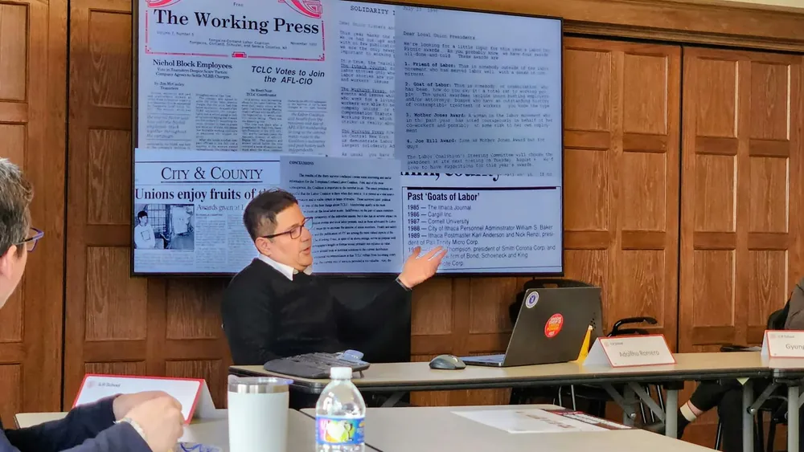

The timeline
Nothing matches. Try fewer words, a different spelling, or another theme.
Tompkins and Cortland counties, New York
From the Cornell service workers’ union of 1981 to the minimum wage study of 2026: 126 moments in local labor history, drawn from the Labor Coalition’s own papers, its newspaper, and the Workers’ Center newsletter. Open any moment to read the story and the documents behind it.
The whole story at once
Moments per year. Shaded bands mark the eight eras. Choose a year to show only its moments; choose it again to show everything. When a search or filter is on, the red part of each column is what matches.
Each dot is a moment, placed by date, on the line of every organization involved. The gray bar runs from an organization’s first moment to its last. Choose a dot to open it.
How often each theme comes up in each era. Darker means more moments. Choose a square to filter by that theme and jump to that era.
Every moment in these charts is also in the list below, which works as the table view.
Nothing matches. Try fewer words, a different spelling, or another theme.
How this was made
Every moment lists its sources. Where they disagree, or a detail is not yet settled, the moment carries a note.

Following the archive’s rules, the timeline does not use interview recordings or excerpts, fieldnotes, or internal documents from present-day organizations, and it leaves out personal details such as ages, immigration status, and contact information. From one unpublished organizational history it takes only dated public events: campaigns, votes, and settlements.
OCR text contains errors, and memories and newsletters sometimes disagree. If a date, name, or outcome is wrong, or you have a story or photograph that belongs here, write to ar2539@cornell.edu.
Not sure where to begin? Try , , or .